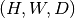
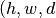
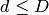
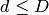
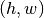
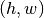
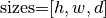
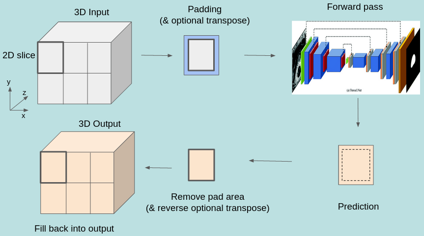
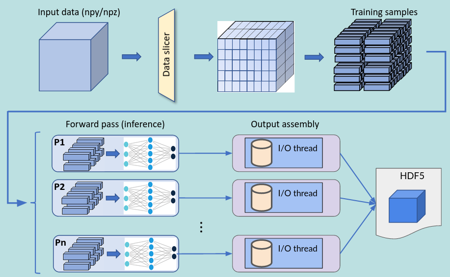

Tensorflow-based Inference Engine¶
rmltf is RocketML’s Tensorflow-based inference engine. Given a trained model and an input dataset, an inference job can be
launched from the command line with the command:
rmltf --config=<json_config_file>
All aspects of how the run is configured must be specified in the json file passed in the --config command-line argument.
The rest of this document will discuss all supported configuration parameters for this application.
Configuration¶
The json file must contain one single object named neural_network, inside which all configuration will reside:
{
"neural_network": {
"checkpoints": {
...
},
"data": {
...
}
}
}
The neural_network object contains sub-objects (sections) which will be discussed next.
Checkpoints section¶
The path to the Tensorflow model directory must be passed to the application in the checkpoints::load parameter, as for example,
"checkpoints": {
"load": "./path/to/tf_model/"
}
Models trained with Keras and saved as .h5 files must be converted to Tensorflow format before running rmltf.
This can be done with the following Python code:
from tensorflow import keras
model = keras.models.load_model('keras_model.h5')
model.save('./tf_model/', save_format='tf')
Data section¶
In this section, the input data used for inference is configured, as well as several aspects of the data loader. The only data type currently supported in rmltf is NumPy.
"data": {
"type": "numpy",
"test_input_path": "/path/to/input/data/",
"test_batch_size": 16,
"preload": true
}
The following parameters can be set:
type: Input data type. Must be set to
numpyin rmltftest_input_path: Path to the input data file (single .npy or .npz file) or directory. See below for more details.
test_batch_size: Number of inference samples per mini-batch (default is 64).
preload: Whether samples will be read up-front from disk and loaded from memory during inference (default is false).
Each numpy array becomes a sample to be forwarded through the network for inference.
One .npy file contains a single numpy array, while one .npz file might contain multiple numpy arrays.
If a directory with multiple .npy or .npz files is passed, arrays are extracted from all files and added to the
list of input samples.
Slicers sub-section¶
The numpy data loader also supports extracting the input samples from a single large numpy array by chopping it off into smaller
blocks of configurable sizes. The samples obtained can have equal or lower dimensionality as the original data, as long as the neural
network can handle their shapes. For example, if the input numpy array is a 3D block of shape ,
one could chop it into smaller blocks of shape ), where  ,
,  and ,
or slice it into 2D tiles along the
and ,
or slice it into 2D tiles along the  -plane with shape ,
or even extract 1D lines of length
-plane with shape ,
or even extract 1D lines of length  along the
along the  -axis.
Multiple slice sets can be defined, each with its own slice size and orientation (the dimensionality of slices across all sets
must be the same, though, since the neural network is common to all). The configuration below shows an example of how to extract
2D samples from a 3D input array using 2 slice sets:
-axis.
Multiple slice sets can be defined, each with its own slice size and orientation (the dimensionality of slices across all sets
must be the same, though, since the neural network is common to all). The configuration below shows an example of how to extract
2D samples from a 3D input array using 2 slice sets:
"data": {
...
"data": "/path/to/input_block.npy",
"slicers": [
{
"name": "yz-slices",
"sizes": [1, 131, 1001],
"padded_sizes": [1, 144, 1008],
"discard_remainders": false,
"transpose": false
},
{
"name": "xz-slices",
"sizes": [540, 1, 1001],
"padded_sizes": [560, 1, 1008],
"discard_remainders": false,
"transpose": true
}
]
}
The following options can be set:
name: Slice set name (optional)
sizes: Slice sizes (required). Expects N elements for N-dimensional input data. Setting an element to 1 flattens the slice along that dimension, reducing the dimensionality of the input samples into the network.
padding: Symmetric padding to be added along each dimension (defaults to zero). If  and
![\textrm{padding=}[p_x, p_y, p_z]](_images/math/2122eb987fa2d045b29c1c19a8526a2e7387d4e6.png) , then slices will have shape
, then slices will have shape  .
Cannot be specified together with padded_sizes.
.
Cannot be specified together with padded_sizes.padded_sizes: Total slice size after padding (defaults to sizes). Useful in case the desired padding is asymmetric. Cannot be specified together with padding.
discard_remainders: Whether to discard regions of the original input data which are left over after division by the slice sizes (default is false).
transpose: Whether to transpose each slice before and after network traversal. Only valid for 2D slices (default is false).
The inference process, including the addition and removal of padding (as well as optional slice transposition), is depicted in the figure below:
{kind=link}
HDF5 output writing
The predictions obtained by running inferences on the slices can be assembled back into a multi-dimensional array and saved to disk as an HDF5 file. Each slice set will result in one dataset in the HDF5 data-structure. In order to enable HDF5 writing, set the following:
"data": {
...
"hdf5_outfile": "prediction.h5"
...
}
The process of writing data into the HDF5 file is performed in parallel (in case of multi-process execution) and asynchronously, i.e., it happens concurrently with inference in order to maximize throughput. The entire infrastructure for data slicing, inferencing and assembling is depicted in the figure below.
{kind=link}
Restrictions:
The input numpy array must have no channel dimension (i.e., the data must be single-channel with only spatial dimensions).
The shape of the output tensor produced by the network must be equal to the input shape plus en extra channel dimension.
Only 2D slices can be transposed.